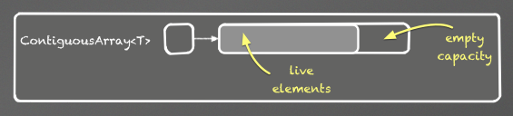
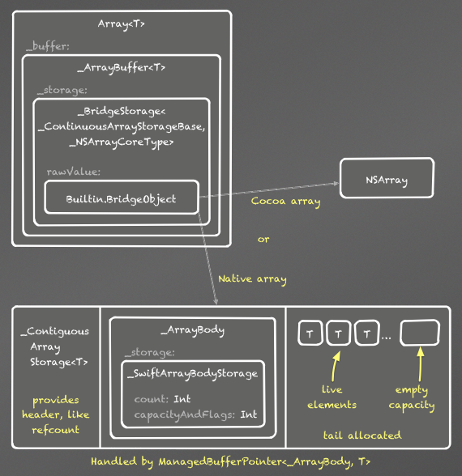
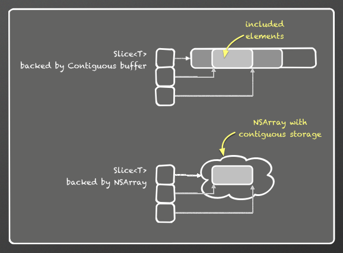

The Swift Array Design¶
| Author: | Dave Abrahams |
|---|---|
| Date: | 2014-04-10 |
Goals¶
- Performance equivalent to C arrays for subscript get/set of non-class element types is the most important performance goal.
- It should be possible to receive an
NSArrayfrom Cocoa, represent it as anArray<AnyObject>, and pass it right back to Cocoa as anNSArrayin O(1) and with no memory allocations. - Arrays should be usable as stacks, so we want amortized O(1) append
and O(1) popBack. Together with goal #1, this implies a
std::vector-like layout, with a reserved tail memory capacity that can exceed the number of actual stored elements.
To achieve goals 1 and 2 together, we use static knowledge of the
element type: when it is statically known that the element type is not
a class, code and checks accounting for the possibility of wrapping an
NSArray are eliminated. An Array of Swift value types always
uses the most efficient possible representation, identical to that of
ContiguousArray.
Components¶
Swift provides three generic array types, all of which have amortized O(1) growth. In this document, statements about ArrayType apply to all three of the components.
ContiguousArray<T>is the fastest and simplest of the three—use this when you need “C array” performance. The elements of aContiguousArrayare always stored contiguously in memory.
Array<T>is likeContiguousArray<T>, but optimized for efficient conversions from Cocoa and back—whenTcan be a class type,Array<T>can be backed by the (potentially non-contiguous) storage of an arbitraryNSArrayrather than by a SwiftContiguousArray.Array<T>also supports up- and down- casts between arrays of related class types. WhenTis known to be a non-class type, the performance ofArray<T>is identical to that ofContiguousArray<T>.Slice<T>is a subrange of someArray<T>orContiguousArray<T>; it’s the result of using slice notation, e.g.a[7...21]on any Swift arraya. A slice always has contiguous storage and “C array” performance. Slicing an ArrayType is O(1) unless the source is anArray<T>backed by anNSArraythat doesn’t supply contiguous storage.
Sliceis recommended for transient computations but not for long-term storage. Since it references a sub-range of some shared backing buffer, aSlicemay artificially prolong the lifetime of elements outside theSliceitself.
Mutation Semantics¶
The ArrayTypes have full value semantics via copy-on-write (COW):
var a = [1, 2, 3]
let b = a
a[1] = 42
print(b[1]) // prints "2"
Bridging Rules and Terminology for all Types¶
Every class type or
@objcexistential (such asAnyObject) is bridged to Objective-C and bridged back to Swift via the identity transformation, i.e. it is bridged verbatim.A type
Tthat is not bridged verbatim can conform toBridgedToObjectiveC, which specifies its conversions to and from ObjectiveC:protocol _BridgedToObjectiveC { typealias _ObjectiveCType: AnyObject func _bridgeToObjectiveC() -> _ObjectiveCType class func _forceBridgeFromObjectiveC(_: _ObjectiveCType) -> Self }Note
Classes and
@objcexistentials shall not conform to_BridgedToObjectiveC, a restriction that’s not currently enforceable at compile-time.Some generic types (ArrayType
<T>in particular) bridge to Objective-C only if their element types bridge. These types conform to_ConditionallyBridgedToObjectiveC:protocol _ConditionallyBridgedToObjectiveC : _BridgedToObjectiveC { class func _isBridgedToObjectiveC() -> Bool class func _conditionallyBridgeFromObjectiveC(_: _ObjectiveCType) -> Self? }Bridging from, or bridging back to, a type
Tconforming to_ConditionallyBridgedToObjectiveCwhenT._isBridgedToObjectiveC()isfalseis a user programming error that may be diagnosed at runtime._conditionallyBridgeFromObjectiveCcan be used to attempt to bridge back, and returnnilif the entire object cannot be bridged.Implementation Note
There are various ways to move this detection to compile-time
For a type
Tthat is not bridged verbatim,if
Tconforms toBridgedToObjectiveCand eitherTdoes not conform to_ConditionallyBridgedToObjectiveC- or,
T._isBridgedToObjectiveC()
then a value
xof typeTis bridged asT._ObjectiveCTypeviax._bridgeToObjectiveC(), and an objectyofT._ObjectiveCTypeis bridged back toTviaT._forceBridgeFromObjectiveC(y)Otherwise,
Tdoes not bridge to Objective-C
Array Type Conversions¶
From here on, this document deals only with Array itself, and not
Slice or ContiguousArray, which support a subset of Array‘s conversions. Future revisions will add descriptions of Slice
and ContiguousArray conversions.
Kinds of Conversions¶
In these definitions, Base is AnyObject or a trivial subtype
thereof, Derived is a trivial subtype of Base, and X
conforms to _BridgedToObjectiveC:
- Trivial bridging implicitly converts
Base[]toNSArrayin O(1). This is simply a matter of returning the Array’s internal buffer, which is-aNSArray.
Trivial bridging back implicitly converts
NSArraytoAnyObject[]in O(1) plus the cost of callingcopy()on theNSArray. [1]Implicit conversions between
Arraytypes- Implicit upcasting implicitly converts
Derived[]toBase[]in O(1). - Implicit bridging implicitly converts
X[]toX._ObjectiveCType[]in O(N).
Note
Either type of implicit conversion may be combined with trivial bridging in an implicit conversion to
NSArray.- Implicit upcasting implicitly converts
Checked conversions convert
T[]toU[]?in O(N) viaa as U[].- Checked downcasting converts
Base[]toDerived[]?. - Checked bridging back converts
T[]toX[]?whereX._ObjectiveCTypeisTor a trivial subtype thereof.
- Checked downcasting converts
Forced conversions convert
AnyObject[]orNSArraytoT[]implicitly, in bridging thunks between Swift and Objective-C.For example, when a user writes a Swift method taking
NSView[], it is exposed to Objective-C as a method takingNSArray, which is force-converted toNSView[]when called from Objective-C.- Forced downcasting converts
AnyObject[]toDerived[]in O(1) - Forced bridging back converts
AnyObject[]toX[]in O(N).
A forced conversion where any element fails to convert is considered a user programming error that may trap. In the case of forced downcasts, the trap may be deferred to the point where an offending element is accessed.
- Forced downcasting converts
Note
Both checked and forced downcasts may be combined with trivial
bridging back in conversions from NSArray.
Maintaining Type-Safety¶
Both upcasts and forced downcasts raise type-safety issues.
Upcasts¶
TODO: this section is outdated.
When up-casting an Derived[] to Base[], a buffer of
Derived object can simply be unsafeBitCast‘ed to a buffer
of elements of type Base—as long as the resulting buffer is never
mutated. For example, we cannot allow a Base element to be
inserted in the buffer, because the buffer’s destructor will destroy
the elements with the (incorrect) static presumption that they have
Derived type.
Furthermore, we can’t (logically) copy the buffer just prior to
mutation, since the Base[] may be copied prior to mutation,
and our shared subscript assignment semantics imply that all copies
must observe its subscript assignments.
Therefore, converting T[] to U[] is akin to
resizing: the new Array becomes logically independent. To avoid
an immediate O(N) conversion cost, and preserve shared subscript
assignment semantics, we use a layer of indirection in the data
structure. Further, when T is a subclass of U, the
intermediate object is marked to prevent in-place mutation of the
buffer; it will be copied upon its first mutation:
Deferred Checking for Forced Downcasts¶
In forced downcasts, if any element fails to have dynamic type Derived,
it is considered a programming error that may cause a trap. Sometimes
we can do this check in O(1) because the source holds a known buffer
type. Rather than incur O(N) checking for the other cases, the new
intermediate object is marked for deferred checking, and all element
accesses through that object are dynamically typechecked, with a trap
upon failure (except in -Ounchecked builds).
When the resulting array is later up-cast (other than to a type that can be validated in O(1) by checking the type of the underlying buffer), the result is also marked for deferred checking.
| [1] | This copy() may amount to a retain if the NSArray
is already known to be immutable. We could eventually optimize out
the copy if we can detect that the NSArray is uniquely
referenced. Our current unique-reference detection applies only to
Swift objects, though. |